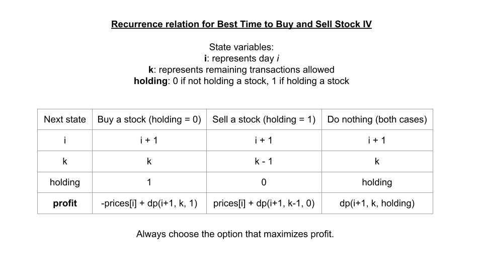

For this one, we're back to starting with top-down.
In this article, we'll be using the framework to solve Best Time to Buy and Sell Stock IV. This problem is rated as "hard" and may seem daunting at first, but with the framework, the logic behind solving this problem is very intuitive. We'll also make use of the pattern of "doing nothing". Like usual, let's use the framework to develop an algorithm:
1. A function that answers the problem for a given state
What information do we need at each state/decision?
We need to know what day it is (so we can look up the current price of the stock), and we need to know how many transactions we have left. These two are directly related to the input.
The note in the problem description says that we cannot engage in multiple transactions at the same time. This means that at any moment, we are either holding one unit of stock or not holding any stock. We should have a state variable that indicates if we are currently holding stock. This variable is fine as a boolean, but for caching purposes, let's use an integer alternating between 0 0 and 1 1 ( 0 0 means not holding, 1 1 means holding).
To summarize, we have 3 state variables:
The problem is asking for a maximum achievable profit. Therefore, let's have a function dp dp where dp(i, transactionsRemaining, holding) dp(i, transactionsRemaining, holding) returns the maximum achievable profit starting from the 𝑖 𝑡 ℎ i th day with transactionsRemaining transactionsRemaining transactions remaining, and holding holding indicating if we start with a stock or not. To answer the original problem, we would return dp(0, k, 0) dp(0, k, 0), as we start on day 0 0 with k k transactions remaining and not holding a stock.
2. A recurrence relation to transition between states
At each state, we need to make a decision that depends on what holding holding is. Let's split it up and look at our options one at a time:
Note that you could also set up the solution so that transactions are completed upon buying a stock instead.
Of course, we always want to make the best decision. We can see that in both scenarios, doing nothing is the same - dp(i + 1, transactionsRemaining, holding) dp(i + 1, transactionsRemaining, holding). Therefore, we have a recurrence relation of:
dp(i, transactionsRemaining, holding) = max(doNothing, sellStock) if holding == 1 otherwise max(doNothing, buyStock)
Where,
doNothing = dp(i + 1, transactionsRemaining, holding), sellStock = prices[i] + dp(i + 1, transactionsRemaining - 1, 0), and buyStock = -prices[i] + dp(i + 1, transactionsRemaining, 1).

3. Base cases
Both base cases are very simple for this problem. If we are out of transactions ( transactionsRemaining = 0 transactionsRemaining = 0), then we should immediately return 0 0 as we cannot make any more money. If the stock is no longer on the market ( i = prices.length i = prices.length), then we should also return 0 0, as we cannot make any more money.
@lru_cache(None)
def dp(i, transactions_remaining, holding):
# Base case
if transactions_remaining == 0 or i == len(prices):
return 0
do_nothing = dp(i + 1, transactions_remaining, holding)
do_something = 0
if holding:
# Sell stock
do_something = prices[i] + dp(i + 1, transactions_remaining - 1, 0)
else:
# Buy stock
do_something = -prices[i] + dp(i + 1, transactions_remaining, 1)
# Recurrence relation
return max(do_nothing, do_something)
return dp(0, k, 0)
Again, the recurrence relation is the same with top-down, but we need to be careful about how we configure our for loops. The base cases are automatically handled because the dp dp array is initialized with all values set to 0 0. For iteration direction and order, remember with bottom-up we start at the base cases. Therefore we will start iterating from the end of the input and with only 1 transaction remaining.
n = len(prices)
dp = [[[0] * 2 for _ in range(k + 1)] for __ in range(n + 1)]
for i in range(n - 1, -1, -1):
for transactions_remaining in range(1, k + 1):
for holding in range(2):
do_nothing = dp[i + 1][transactions_remaining][holding]
if holding:
# Sell stock
do_something = prices[i] + dp[i + 1][transactions_remaining - 1][0]
else:
# Buy stock
do_something = -prices[i] + dp[i + 1][transactions_remaining][1]
# Recurrence relation
dp[i][transactions_remaining][holding] = max(do_nothing, do_something)
return dp[0][k][0]
The time and space complexity of this problem for both implementations is the number of states since the recurrence relation is just a constant time formula. If n = prices.length n = prices.length, then this means the time and space complexity is 𝑂 ( 𝑛 ⋅ 𝑘 ⋅ 2 ) = 𝑂 ( 𝑛 ⋅ 𝑘 ) O(n⋅k⋅2)=O(n⋅k).